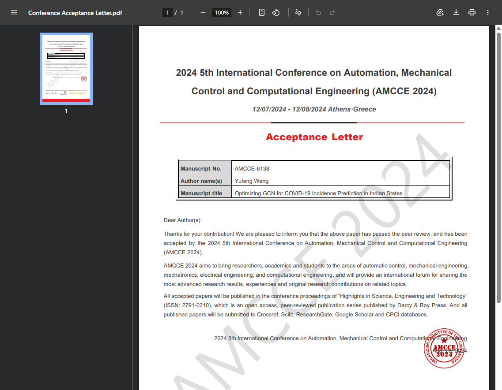

Projects
A 1-page style overview. Each project links to a separate demo sub-page.
Featured demos


More ideas to add later
- Java / Python mini tools (e.g., data cleaner, scraper, small dashboard).
- UI components library (buttons, cards, modals) for practice.
- Write-up pages explaining technical decisions (what, why, how).